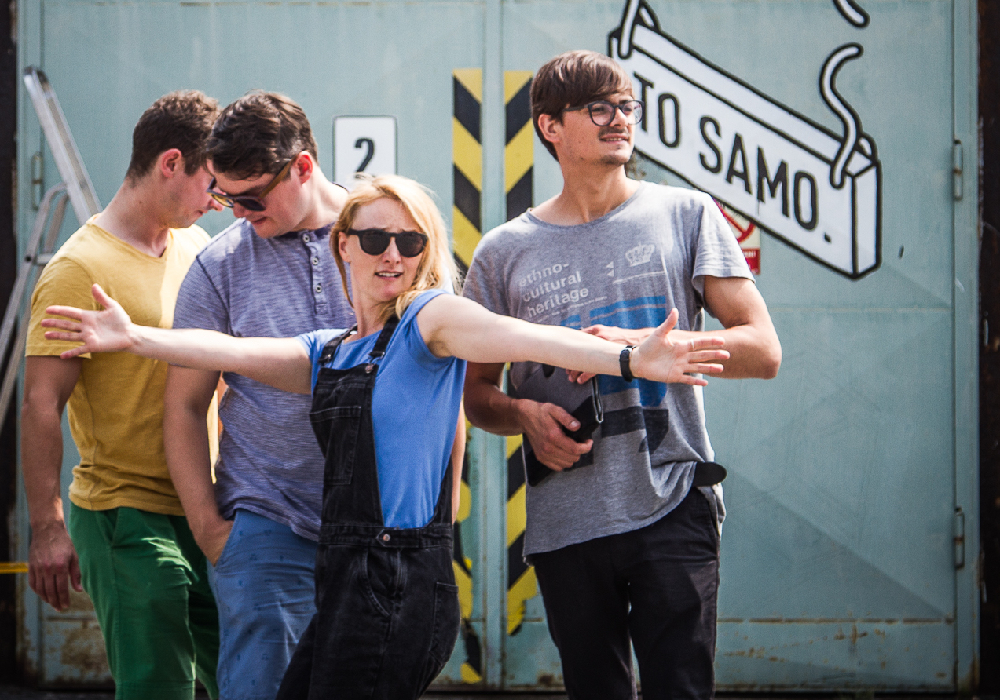

Instantní Jananas
Zde servírujeme naše BIO
Ingredience
Jana Infeldová – zpěv
Jan Vávra – kytara
Jaromír Fulnek – baskytara
dochucovadlo: Jan „Chili“ Chalupa – bicí
Menu
Zatím tříchodové
Jananas – Jananas (Indies Scope, 2010)
DEMO na to! (vlastním nákladem, 2008)
…a DEMO co? (vlastním nákladem, 2006)
SILNÝ VÝVAR
Jananas je kapela, které všechno dlouho trvá
Jananas je kapela, kterou hraje zároveň Český rozhlas Vltava i Radio 1
Jananas je kapela, která nikdy nikam nepřijela včas
Omáčka
Festivaly
Colours of Ostrava, Zahrada, Sázavafest, Trnkobraní, Prázdniny v Telči
Okolo Třeboně, Boskovice, Kladenský Majáles, Folková Růže a další
Ceny
Nominace na cenu Anděl 2010 (CD Jananas, kategorie Folk a country)
Krtek za rok 2009 na největším folkovém festivalu Zahrada. RGM LIVE SPACE vysílaná na TV Óčko, kde se kapela probojovala z 431 přihlášených účastníků mezi nejlepších 10 skupin
Skladba Zapatama byla vyhlášena jako nejlepší píseň na serveru i-legalne.cz v měsíční hitparádě Inkubátor (2008)
Semifinále soutěže Česko hledá písničku (2007)
Rádia, televize, divadla
Rádio Ethno, Samson, Blaník, Český rozhlas
Česká televize –pořad Na Moll, Události v kultuře-živé vystoupení
Divadlo Járy Cimrmana, Naivní divadlo v Liberci, Loď Tajemství bratří Formanů
Koncerty
Hráli s námi (nebo my s nimi?): Jiří Schmitzer, Vlasta Redl, Václav Koubek a The Hogs, Buty, Jiří Pavlica a Hradišťan, Lenka Dusilová, Ester Kočičková. A nesmíme zapomenout na Galakoncert Vánoce v Opeře s orchestrem Státní opery Praha a sdílenou dámskou šatnu s Chinaski.

Slepičí bujón
„Jejich hudba, to jsou silné a netuctové melodie, moderně znějící střídmé akustické aranže a především vokál charismatické Jany Ivanovič-Infeldové. Ta patří bezpochyby mezi nejvýraznější pěvecké talenty, co se na tuzemské scéně za poslední dobu objevily.“
(www.i-legalne.cz)
„Jana Infeldová sice kdysi svou ironií zpestřovala televizní seriál Rodinná pouta, ale folkoví posluchači ji už několik let znají především jako výraznou zpěvačku tria Jananas. Jeho debutové album představuje až překvapivě vyzrálou porci písničkářství i nenásilného humoru, plného sarkasmů, ironie a až podvratného přístupu k významu pojmu „korektní“. Místo o orosené pasece se tak na albu zpívá o vlivu médií, GPS, radovánkách seniorů, bodu G i lákavém obsahu ledničky. Zároveň hudebně představuje zcela současnou tvář folku, ovlivněnou třeba i hip hopem, plnou chytrých a nepodbízivých melodií. Hravá a přítulná deska.“
(Antonín Kocábek, Týden)
“Čas nejspíš ukáže, jestli v tomto triu vyroste konkurence bratrům Ebenům, Two Voices nebo Tomáši Klusovi. Každopádně album Jananas na to má: je sdělné, hudebně svěží, zábavné i chytré. To je kombinace, již písničkáři obvykle vyvažují s obtížemi. A Jananas se to podařilo už na první studiové desce.”
(Vladimír Vlasák, MF DNES)
„Úcta k zásadám a k šedinám klasiků folkového žánru? Ani na vteřinu, což je třeba vyzvednout jako zřídka vídané plus.“
(Petr Ferenc, Lidové noviny)
„Je mi jasné, že bude hudba Jananas hodně srovnávaná s tvorbou Xindla X – společnými znaky jsou punkový přístup k textům a chuť si hrát se slovy. Ale jinak je Jananas o patro výš. Album produkoval Martin Ledvina, původně trio bylo rozšířeno ještě o bicí a perkusivní nástroje. Hlavní je se nebát, takže Jananas klidně v jedné písni skříží folk, beatbox a dub. Hlavní zbraní pak zůstávají texty – chytré, vtipné, nápadité a charakteristický projev frontmanky Jany Infeldové, která je prostě Dokonalá.“
(Tomáš Klement, Český rozhlas )
„Písničky Jananasu charakterizuje velké množství nápadů, které by mnohým kapelám stačilo na desek několik.“
(Milan „Belmondo“ Plch, folktime.cz)
„Jananas nejen že píšou na český folk neuvěřitelně svěží texty, stejně svěže tahají z rukávu hudební motivy a svůj moderní folk provoní i dalšími styly. A tak si na debutovém albu tykají s hip hopem, skáčkem nebo blues a na naší scéně zanechávají výraznou a nesmazatelnou stopu.“
(Honza Průša, musicserver.cz)
OMASTEK naší polévky aneb podporuje nás:
Pro pořadatele
Bio
Jananas je kapela, kterou si nespletete. Skupina vedena charismatickou zpěvačkou Janou Infeldovou tak dlouho narušovala stereotypy folkového žánru, až tuto škatulku přerostla.
Skupina podle svých slov vznikla v roce 2005 a první veřejné vystoupení měla v roce 2007. To ještě jako duo, protože tvůrčí jádro skupiny od začátku tvoří kromě zpěvačky Jana Infeldové také kytarista Jan Vávra. Brzy k sobě přibrali baskytaristu Jaromíra Fulneka, který se podle legendy kvůli kapele naučil na baskytaru za pouhých čtrnáct dní.
Poprvé na sebe Jananas upozornil na největším českém folkovém festivalu Zahrada, kde v roce 2009 získal ocenění. Poté se skupina spojila s producentem Martinem Ledvinou a vydala svůj eponymní debut. Za tuto desku, která vyšla poťouchle na Silvestra roku 2010 u vydavatelství Indies Scope records, získala skupina hned pár měsíců na to nominaci na cenu Anděl v kategorii folk a country. Následně navštívila snad všechna myslitelná i nemyslitelná podia českých klubů a festivalů. To již s bubeníkem Janem „Chili“ Chalupou, který se stal brzy stálým členem sestavy.
Skladbu Pražské jaro z debutové desky si v roce 2011 vybral Český rozhlas Vltava jako jingle pro přímé přenosy ze skutečného festivalu Pražské jaro. V roce 2014 pak kapela obohatila silvestrovské vysílání stanice ČRo 3 – Vltava koncertem a zároveň rozhlasovou hrou.
Inteligentní texty a jemný podvratný humor je hlavní devízou Jananasu. Cílená mystifikace občas dovede kapelu do svízelné situace, například, když všichni hudební novináři a fanoušci začnou věřit, že kapela je z Brna.
Skupina o sobě tvrdí, že jí všechno dlouho trvá, proto se na další album čekalo dlouhých šest let. Nové album vyjde u vydavatelství Supraphon v září 2016.
Tiskový kontakt:
Jenda Vávra, 777 108 194
Repertoárový list 2017
The Best of Jananas
(Jan Vávra, Jana Infeldová, Jaromír Fulnek, Jan Chalupa/Jana Infeldová, Jan Vávra)
To samo
(Jan Vávra, Jana Infeldová, Jaromír Fulnek, Jan Chalupa/Jana Infeldová, Jan Vávra)
GPS
(Jan Vávra, Jana Infeldová, Jaromír Fulnek / Jana Infeldová, Jan Vávra)